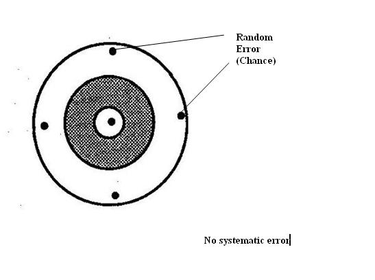
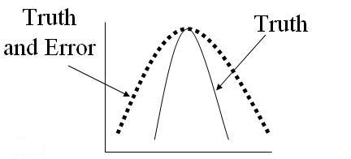
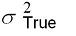
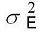
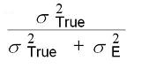

Random Error - Chance (Reproducibility)
Lead Author(s): Jeff Martin, MD
Definition of Random Error
In distinction to systematic error or bias, random error occurs because we cannot sample everyone in our studies.
- We are always forced to just sample a fraction of the source population.
Chance and Random Direction
Just by chance alone we might draw a sample that is not representative of the source population.
- That's why random error is synonymous with chance and the direction of the error is random and not predictable.
- We say that random error is captured in the precision of the estimate and is usually described in the standard error or confidence interval of our estimate.
Diagram of Random Error
As shown in the diagram below the difference we see between any two of the different estimates is random error. You will note there is no systematic error. In other words, there is no systematic process that it is leading to a systematic deviation from the truth.

Measurement Bias in Analytic Studies
When we are looking at measurement bias what problems do we see in reproducibility or that are the result of random error?
The measure of association between the exposure variable and the outcome variable, will be attenuated (ie smaller) by a factor of the reproducibility of the exposure measurement.
- For example, if reproducibility is 0.5 then your measure of association will be halved.

Random Error in a Predictor Variable
ASSUMING:
Exposure is normally distributed with variance,

Random error is normally distributed with variance,

Then, the observed regression coefficient is equal to the true regression coefficient times:

i.e., the greater the measurement error, the greater the attenuation (bias) towards the null
- (e.g., if reproducibility is 0.5, the measure of association is halved)